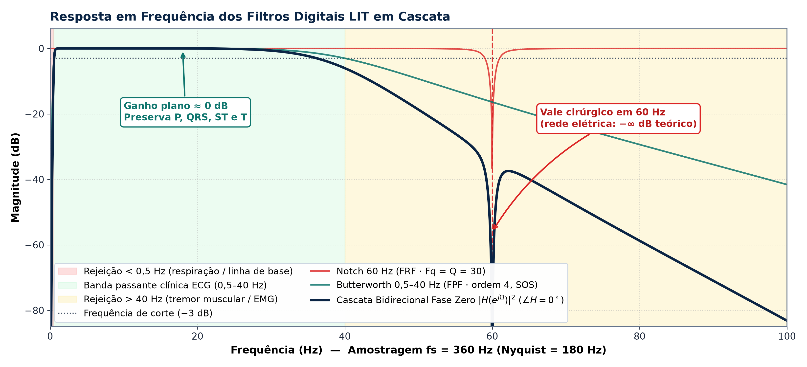
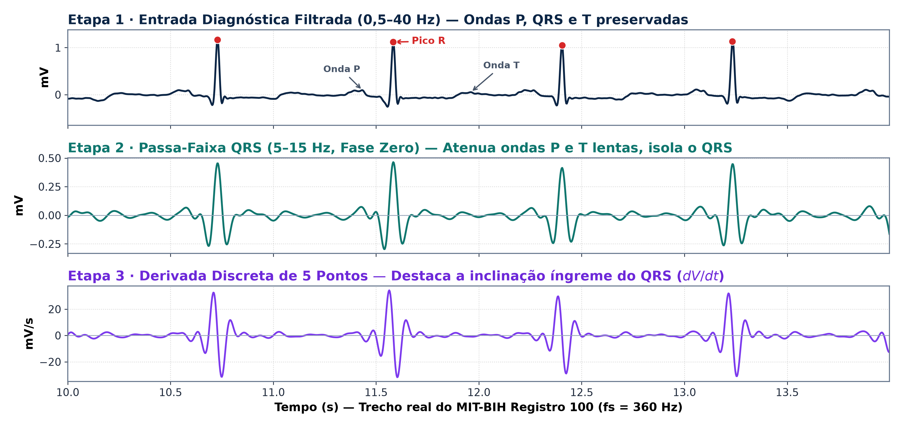
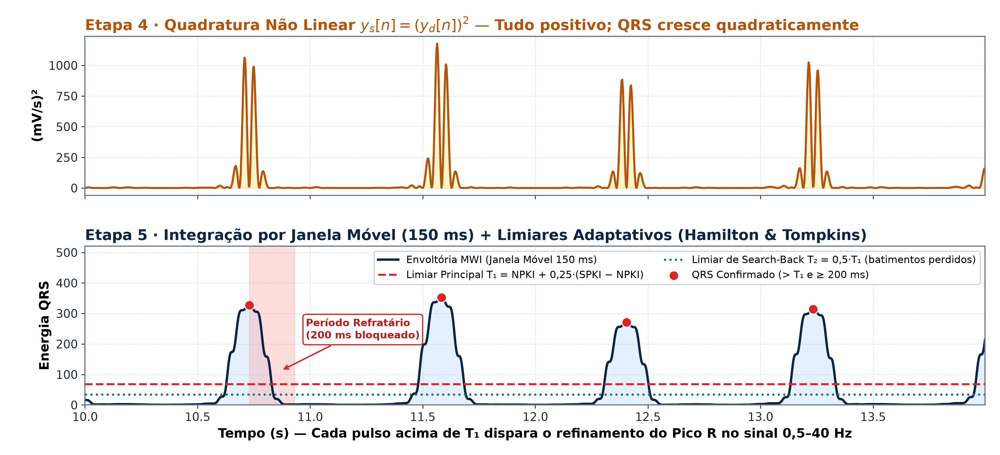
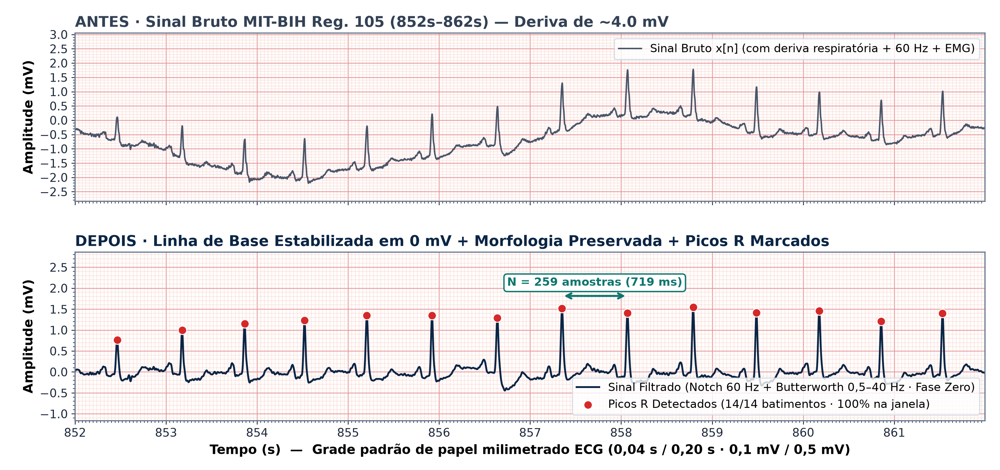
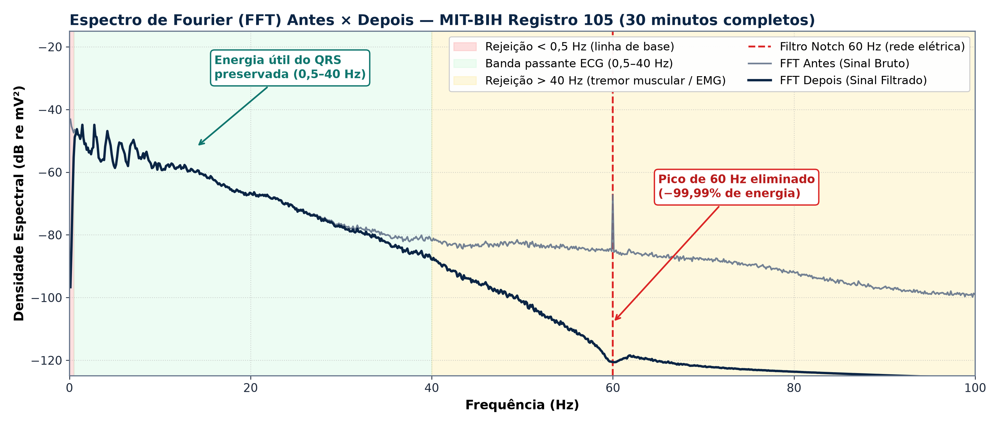
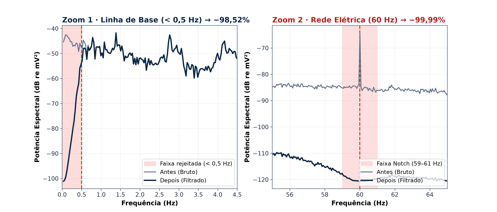
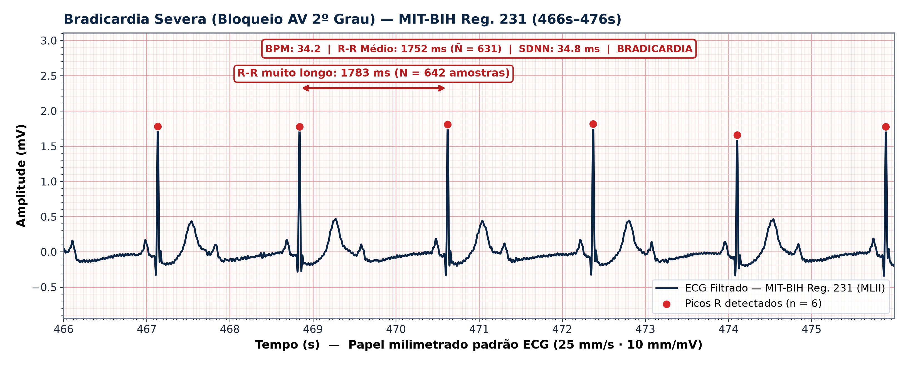
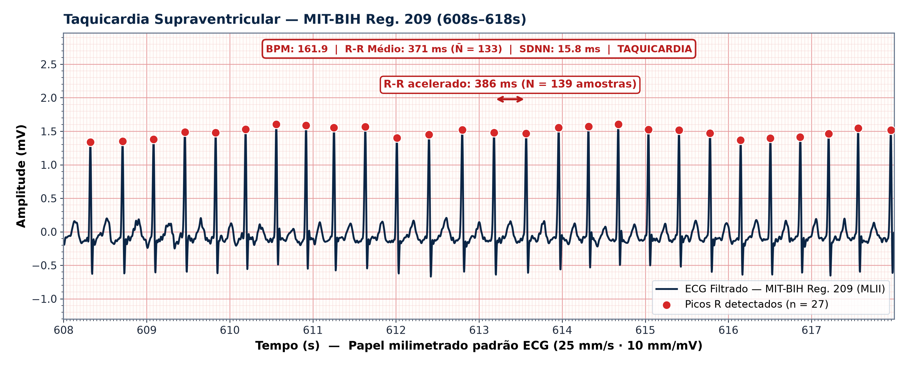

Suporte Computacional para Diagnóstico de Exames Biomédicos (ECG)
Da teoria de Sinais e Sistemas ao produto aberto: filtragem digital LIT de fase zero, detecção de picos R (Pan-Tompkins / Hamilton-Tompkins), análise espectral (FFT/Parseval) e validação em 13.171 batimentos reais do MIT-BIH.
O Problema Clínico Real (Levantamento em Campo)
Principais Ruídos Relatados na Prática
- Respiração e movimentação torácica: oscilação lenta da linha de base (< 0,5 Hz) que desloca todo o traçado.
- Interferência da rede elétrica: componente senoidal estreita em 60 Hz (tomadas e equipamentos próximos).
- Tremor muscular / agitação (EMG): ruído de alta frequência (> 40 Hz) que "engrossa" e polui a linha do ECG.
Dor Crítica: Distorção por Filtros Comerciais
- Aparelhos convencionais frequentemente usam filtros causais cujo atraso de fase não linear deforma o pico R e entorta o segmento ST.
- Demanda clínica: traçado limpo em papel milimetrado padrão, sem distorção de fase, com picos R destacados e triagem imediata (BPM + regularidade).
Trajetória Completa do Projeto (Ensino · Pesquisa · Extensão)
Base Bibliográfica
Modelagem em tempo discreto (\(\delta[n]\), \(u[n]\), sistemas LIT e estabilidade BIBO) e benchmarks: Pan & Tompkins (1985), Hamilton & Tompkins (1986) e Luz et al. (2016).
Entrevista & Requisitos
Mapeamento dos ruídos clínicos reais e tradução para especificações de DSP: cascata LIT fase zero (Notch 60 Hz + Butterworth 0,5–40 Hz) e triagem 60–120 BPM.
Algoritmo + App Web
Pipeline completo em Python validado em 6 registros reais (30 min cada) do PhysioNet MIT-BIH + aplicação web 60 FPS publicada no GitHub Pages.
Devolutiva & Divulgação
Relatório técnico final com figuras 300 DPI, análise crítica, acesso público por QR Code e demonstração ao vivo em sala.
Do Coração ao Vetor Digital: Anatomia P-QRS-T e Amostragem
Por Baixo dos Panos: Arquitetura do Pipeline em Duas Vias
Sinal Discreto \(x[n]\)
MIT-BIH real (.dat/.hea/.atr) ou upload de .csv/.txt. Detecta e avisa se for .pdf já filtrado.
LIT Fase Zero
Notch \(60\text{ Hz}\) (\(Q=30\)) + Butterworth \(0{,}5\text{–}40\text{ Hz}\) (ordem 4, SOS) via filtfilt. Traçado da tela!
Realce do Complexo
Passa-faixa \(5\text{–}15\text{ Hz}\) → Derivada 5 pts → Quadratura → Janela Móvel \(150\text{ ms}\). Apaga P e T!
Regras Adaptativas
Limiares SPKI/NPKI, refratário \(\ge 200\text{ ms}\), rejeição de Onda T, search-back e refinamento no sinal \(0{,}5\text{–}40\text{ Hz}\).
Métricas & Espectro
Período discreto \(\bar{N}\), \(\overline{RR}\), BPM, SDNN, RMSSD, classificação (\(60\text{–}120\text{ BPM}\)) e FFT + Parseval.
Por que separar em DUAS vias?
Se exibíssemos direto o sinal do filtro estreito 5–15 Hz, apagaríamos as ondas P, T e o segmento ST. Mantendo duas vias paralelas, mostramos um ECG fiel ao exame clínico (\(0{,}5\text{–}40\text{ Hz}\)) enquanto detectamos os picos R com máxima imunidade a ruído!
A seguir: abrindo CADA equação por baixo dos panos
- Slides 6–10: Derivação exata do Notch 60 Hz, Butterworth SOS, Fase Zero, Bode e Plano Z.
- Slides 11–14: Pan-Tompkins passo a passo, regras de Hamilton, BPM, SDNN e RMSSD.
- Slides 15–21: Resultados reais no MIT-BIH (FFT, Parseval, 13.171 batimentos e 3 anomalias).
Como é Feito o Filtro 1: Notch 60 Hz (iirnotch, \(Q = 30\))
1. Frequência Digital e Parâmetros (\(f_s = 360\text{ Hz}\))
- Zeros sobre \(|z| = 1\): \(z_{1,2} = e^{\pm j\pi/3} \implies H_{\text{notch}}(e^{j\pi/3}) = 0\) (\(-\infty\text{ dB}\) exatos em \(60\text{ Hz}\)).
- Polos internos (\(r = 0{,}98269\)): ficam logo atrás dos zeros para fechar uma fenda estreita de apenas \(2\text{ Hz}\), mantendo ganho \(\approx 1\) fora de \(60\text{ Hz}\).
2. Função de Transferência \(H_{\text{notch}}(z)\)
3. Equação de Diferenças (Executada Amostra a Amostra!)
Apenas 5 multiplicações e 4 somas por amostra — custo computacional \(O(M)\), rodando em microssegundos tanto no Python quanto no navegador!
Como é Feito o Filtro 2: Butterworth \(0{,}5\text{–}40\text{ Hz}\) (Ordem 4, SOS)
1. Do Analógico ao Digital (Transformação Bilinear)
O filtro Butterworth garante magnitude maximamente plana na banda passante (zero ripple, sem deformar a amplitude do ECG):
A transformação passa-baixa \(\to\) passa-faixa dobra o grau: \(N = 4\) gera 8 polos (4 para o corte em \(0{,}5\text{ Hz}\) + 4 para o corte em \(40\text{ Hz}\)).
2. Cascata de 4 Seções de 2ª Ordem (SOS / Biquads)
- Por que NÃO usar polinômio direto de grau 8? Como \(0{,}5\text{ Hz} \ll 360\text{ Hz}\), os polos da borda inferior ficam em \(|p| = 0{,}99672\) (a \(0{,}00328\) da instabilidade!). Em forma direta, arredondamentos em ponto flutuante empurram polos para \(|z| \ge 1\).
- Biquads extremos reais no nosso código:
\(\text{SOS}_1\text{ (40 Hz):}\;\dfrac{0{,}0066(1 + 2z^{-1} + z^{-2})}{1 - 0{,}9789z^{-1} + 0{,}2640z^{-2}}\;\;(\text{zeros em }z=-1)\)
\(\text{SOS}_4\text{ (0,5 Hz):}\;\dfrac{1 - 2z^{-1} + z^{-2}}{1 - 1{,}9934z^{-1} + 0{,}9935z^{-2}}\;\;(\text{zeros em }z=+1)\)
Por que Fase Zero (filtfilt)? Causal vs. Bidirecional
Filtro Causal Comum (lfilter)
Passa só para frente: \(Y(e^{j\omega}) = H(e^{j\omega})X(e^{j\omega})\). A fase não linear \(\angle H(e^{j\omega}) \neq 0\) atrasa o pico R e entorta o segmento ST.
Demonstração da Filtragem Bidirecional
1) Ida: \(V(e^{j\omega}) = H(e^{j\omega})X(e^{j\omega})\)
2) Espelho \(v[-n]\): \(\mathcal{F}\{v[-n]\} = V^*(e^{j\omega})\)
3) Volta + re-espelho: multiplica por \(H^*(e^{j\omega})\)
Resultado Matemático Exato
Real e \(\ge 0 \implies \angle H_{\text{ef}}(e^{j\omega}) \equiv 0^\circ\) e dobro da atenuação!
Resposta em Frequência da Cascata LIT (\(\left|H(e^{j\omega})\right|\) em dB)

filtfilt (\(|H|^2\)): dobra a inclinação de corte em \(\text{dB}\) (de \(24\) para \(48\text{ dB/oitava}\) por borda!) com \(\angle H = 0^\circ\).Transformada Z e Prova Numérica de Estabilidade BIBO

Como o Algoritmo Acha os Picos R: Pan-Tompkins (Etapas 1 a 3)

Pan-Tompkins (Etapas 4 e 5): Quadratura, Integração e Limiares

As 4 Regras Inteligentes de Decisão (Hamilton & Tompkins, 1986)
1. Limiar Duplo Adaptativo (\(\text{SPKI}\) e \(\text{NPKI}\))
Mantém estimativas exponenciais de Sinal QRS e Ruído (na MWI e no passa-faixa \(5\text{–}15\text{ Hz}\)):
Anti-saturação: picos anômalos de artefato são limitados a \(2{,}5 \times \text{p}_{99{,}5}\) para não travar o limiar!
2. Período Refratário Fisiológico (\(\ge 200\text{ ms}\))
Após a despolarização ventricular, o miocárdio fica biologicamente refratário por \(200\text{ ms}\) (teto fisiológico de \(300\text{ BPM}\)).
Elimina instantaneamente duplas detecções em complexos QRS largos ou bífidos.
3. Rejeição de Onda T Hiperaguda (\(200\text{–}360\text{ ms}\))
Se um candidato surgir entre \(200\text{ ms}\) e \(360\text{ ms}\) após o último QRS, testamos sua inclinação máxima \(\max|y_d|\):
4. Search-Back + Refinamento de Polaridade
- Search-Back: se \(\Delta t \gt 1{,}55\,\overline{RR}\), revisita o intervalo com \(T_{I2} = 0{,}5\,T_{I1}\) e atualiza \(\text{SPKI} \leftarrow 0{,}25\,P + 0{,}75\,\text{SPKI}\) para resgatar batimentos fracos!
- Refinamento (\(\pm 80\text{ ms}\)): retorna ao sinal diagnóstico \(0{,}5\text{–}40\text{ Hz}\) e crava o vértice do pico R — tratando inclusive PVCs invertidos (Reg. 108/119).
Periodicidade Discreta \(x[n] = x[n + N]\), BPM, SDNN e RMSSD
Período Discreto \(N\) e Intervalo R-R
Em ritmo sinusal regular, o sinal é quase-periódico: \(x[n] \approx x[n + \bar{N}]\).
Frequência Cardíaca (BPM)
Inversamente proporcional ao período fundamental discreto médio \(\bar{N}\).
Variabilidade (SDNN & RMSSD)
Medem o desvio da periodicidade: \(\text{SDNN} \gt 100\text{ ms}\) sinaliza ritmo irregular / arritmia!
Classificação Clínica Automática (Limiares definidos na Entrevista — Relatórios 2 e 3):
Resultado Temporal: Antes × Depois em Papel Milimetrado

Domínio da Frequência (FFT) e Teorema de Parseval

Lupa Espectral: Eliminação da Linha de Base e da Rede 60 Hz

Validação Quantitativa no MIT-BIH vs. Literatura (Rel. 1)
100, 119, 231, 209)Sensibilidade & F1-Score por Registro (30 min cada)
Comparação com a Literatura (Rel. 1)
| Estudo | Se (%) | +P (%) | F1 (%) |
|---|---|---|---|
| Pan & Tompkins (1985) | 99,75 | 99,54 | 99,64 |
| Hamilton & Tompkins (1986) | 99,69 | 99,77 | 99,73 |
| Luz et al. (2016) | > 99,0 | > 99,0 | > 99,0 |
| Nosso Algoritmo (6 reg.) | 99,80 | 99,09 | 99,44 |
Análise de erros: nos 4 registros sem saturação severa (100, 119, 231 e 209), o detector atingiu 100,0% de sensibilidade (0 FN em 8.836 batimentos). Os 121 FP concentraram-se nos trechos de desconexão de eletrodo dos registros 105 e 108.
Caso Real 1 · Bradicardia Severa (MIT-BIH Reg. 231)

Caso Real 2 · Arritmia Ventricular / Bigeminismo (Reg. 119)

Caso Real 3 · Taquicardia Supraventricular (MIT-BIH Reg. 209)

Como o Aplicativo Web Funciona por Baixo dos Panos
Arquitetura Híbrida (Local Python ↔ GitHub Pages JS)
- Frontend nativo 60 FPS (HTML5 Canvas): papel milimetrado interativo com pan, zoom, sobreposição direta e reprodução em tempo real (\(25\text{ mm/s}\)).
- Modo Servidor Local (
server.py· FastAPI): pipeline completo emNumPy / SciPy / WFDBcom acesso aos 30 min completos e exportação 300 DPI. - Modo Estático (
docs/· GitHub Pages): aciona automaticamente odsp_engine.js— 100% do DSP roda no navegador: Notch + Butterworth SOSsosfiltfilt, Pan-Tompkins, FFT de Bluestein (qualquer \(M\)) e Parseval! - Privacidade por projeto: nenhum exame enviado sai do dispositivo do usuário!
Importação Inteligente de Exames Reais
.csve.txt: detecta separador (,;tab), ignora cabeçalhos, identifica a coluna temporal e infere automaticamente \(f_s\).- PhysioNet (
.dat+.hea+ opcional.atr): decodifica sinais binários de 12 bits (formato 212) e 16 bits diretamente no navegador! - Detecção e Proteção para
.pdf/ Imagens:Exame em PDF/foto já passou pelos filtros do eletrocardiógrafo → o site exibe o PDF para visualização, bloqueia FFT/filtragem indevida e orienta enviar o sinal bruto \(x[n]\)!
pytest cobrindo filtros, BIBO, Parseval, CSV, PhysioNet, PDF e privacidade.Demonstração Ao Vivo & Teste Agora no Seu Celular!
Roteiro da Demonstração em Sala
- 1. Fase Zero ao vivo (Reg. 105): ligar/desligar Notch \(60\text{ Hz}\) e Butterworth \(0{,}5\text{–}40\text{ Hz}\) + Sobreposição Direta.
- 2. Monitor 60 FPS: arrastar, dar zoom e acionar ▶ Reproduzir (\(25\text{ mm/s}\)).
- 3. Anomalias em 1 clique:
231(Bradicardia),119(\(\text{SDNN} = 359{,}5\text{ ms}\)) e209(Taquicardia \(162\text{ BPM}\)). - 4. Upload no navegador: importar
exemplo_ruidoso_mitbih.csve testar um.pdf(alerta automático).